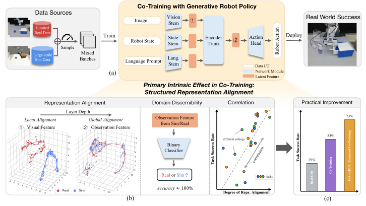
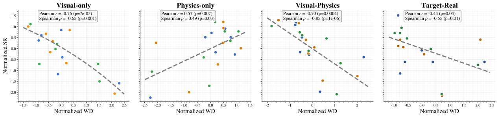
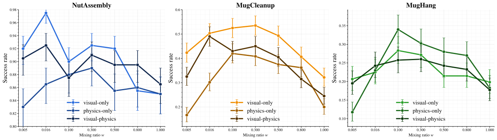
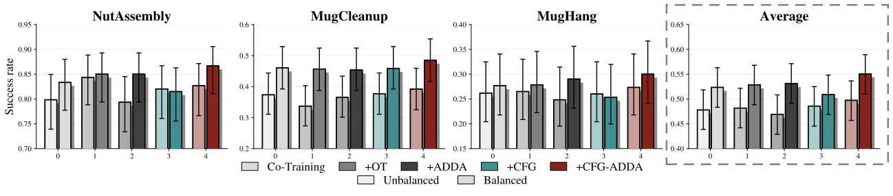

Overview
What is Co-Training?
Co-training — combining limited in-domain real-world data with abundant surrogate data such as simulation1,2,3, cross-embodiment robot data4,5, or even cross-modality data6 — is widely used for training generative visuomotor policies. One strategy is to simply do mixed training. However, despite its empirical success, the mechanisms that determine when and why co-training is effective remain poorly understood.
What We Do
We investigate the working principles of sim-and-real co-training through theoretical analysis and empirical study, and identify two intrinsic effects governing performance improvement. We validate these effects with controlled experiments on a toy model and extensive sim-and-sim and sim-and-real robotic manipulation experiments. Our analysis provides a unified interpretation of recent co-training techniques and motivates a simple combination of methods that achieves consistent improvements over prior approaches.

More broadly, the hope is to provide a closer look at the surface of co-training, and to potentially encourage the community to push this important but hard to achieve direction forward together.
You can jump to the Takeaways to learn the key insights.
A Bit of Theoretical Insights: Two Intrinsic Effects
Training a co-trained diffusion policy corresponds to jointly learning a feature encoder $f_\phi:\mathcal{O}\rightarrow\mathcal{Z}$ and a policy model $\pi_\theta:\mathcal{Z}\rightarrow\mathcal{A}$. Through our analysis, we identify that there exists one intrinsic effect in each space.
Structured Representation Alignment
A balance between cross-domain representation alignment and domain-specific discernibility. Alignment enables transfer of task-relevant knowledge from surrogate data; discernibility allows actions to adapt to the real world.
Explains ~50% of loss varianceImportance Reweighting Effect
Domain-dependent modulation of action distribution weighting. Determined by the mixing ratio $w$, dataset size $|\mathcal{D}|$, and domain gaps, it operates at a secondary, modulatory level.
Explains ~20% of loss varianceStructured Representation Alignment: in the latent space $p(\mathcal{Z})$
We prove the existence of an analytical optimal solution, which reveals that the behavior of the co-trained score function depends on the learned representations. Based on their alignment structure, three scenarios emerge:
Disjoint
Representations from the two domains occupy entirely separate clusters. No positive transfer occurs from the source domain.
No transferStructured Aligned
Close but not collapsed. Action prediction is guided by source-domain neighbors but dominated by target-domain data.
Effective transferOverlapping
Fully collapsed representations. The policy cannot distinguish domains, leading to bimodal action distributions.
Negative transferImportance Reweighting: in the conditional action space $p(\mathcal{A|Z})$
Another effect further modulates the action sampling distribution by reweighting score functions across domains. Define $r_k(a^t,t) := \frac{||a^t - \alpha_t a_k||}{\sigma_t \sqrt{d}}$, the relative weight between target and source samples follows:
$g_{k}=\text{Softmax}\big(\ln(w_k) - r_k^2 \cdot d/2\big), \quad w_t = w/N,\; w_s = (1-w)/M$
In special case we can have: $\frac{g_r}{g_s} = \frac{1-w_N}{w_N}\cdot \frac{w}{1-w} \cdot \exp(\frac{r_s^2 - r_r^2}{2})$
The amplitude of this modulation depends on three factors: (i) the mixing ratio $w$, (ii) the dataset sizes $N$ and $M$, and (iii) the domain gaps between source and target actions.

Illustrative Toy Models
To disentangle and understand the individual contributions of both effects, we design controlled toy co-training experiments. The policy model learns a mapping $\pi(y|x):\mathbb{R}^3 \rightarrow \mathbb{R}^2$, where we manually define source and target manifolds with different distributions and alignment structures. The adjustment of the data mixing ratio $w$ controls the importance reweighting effect:
Structured Reprsentation Alignment is the main intrinsic effect that governs the performance of co-training.
Real Robotic Observations
Alignment Can Be Learned Implicitly
We visualize the latent embeddings with UMAP across different mixing ratios. Within a certain range of balanced mixing ratios ($w \in [0.016, 0.3]$), the shallow layers exhibit local geometry alignment while the deep layer features show global alignment —all without any explicit alignment objective. The phenomenon holds consistently across different tasks.
Local geometry alignment in shallow layers. Drag and zoom to explore.
Global alignment in deep layers. Drag and zoom to explore.
Alignment Correlates with Performance
The correlation between representation alignment (measured by Wasserstein distance) and task success rate is moderate-to-strong, with Pearson and Spearman coefficients in the range of $0.6 \sim 0.8$ across all settings except pure physics-only gaps.

Discernibility is Indispensable

A Unified View of Co-Training Methods
Existing co-training techniques can be understood through the lens of how they improve representation alignment and domain discernibility. We revisit three representative approaches, and further propose a simple combination method.
Optimal Transport
Explicitly matches representation distributions across domains via soft coupling.
ADDA
Adversarial discriminator promotes domain-invariant representations.
CFG
Classifier-free guidance preserves domain information via separate conditional pathways.
CFG-ADDA (Ours)
Combines adversarial alignment with domain guidance to balance both objectives.
Sim-and-Sim Experiments

Real-World Evaluation
We evaluate all methods in sim-and-real co-training on three challenging manipulation tasks, with 15 trials each:
| Method | NutAssembly | MugCleanup | MugHang | Avg | ||||||
|---|---|---|---|---|---|---|---|---|---|---|
| w=0.016 | w=0.1 | w=0.3 | w=0.016 | w=0.1 | w=0.3 | w=0.016 | w=0.1 | w=0.3 | ||
| Real-Only | 6 / 15 | 4 / 15 | 3 / 15 | 4.3 / 15 | ||||||
| Co-Training | 9 / 15 | 6 / 15 | 7 / 15 | 9 / 15 | 5 / 15 | 4 / 15 | 3 / 15 | 6 / 15 | 4 / 15 | 8 / 15 |
| + OT | 6 / 15 | 8 / 15 | 3 / 15 | 4 / 15 | 6 / 15 | 8 / 15 | 5 / 15 | 5 / 15 | 1 / 15 | 7 / 15 |
| + ADDA | 7 / 15 | 6 / 15 | 7 / 15 | 3 / 15 | 7 / 15 | 6 / 15 | 6 / 15 | 7 / 15 | 4 / 15 | 7 / 15 |
| + CFG | 7 / 15 | 6 / 15 | 7 / 15 | 4 / 15 | 9 / 15 | 7 / 15 | 4 / 15 | 5 / 15 | 8 / 15 | 8 / 15 |
| + CFG-ADDA | 12 / 15 | 7 / 15 | 10 / 15 | 6 / 15 | 12 / 15 | 9 / 15 | 10 / 15 | 7 / 15 | 3 / 15 | 11 / 15 |
Takeaways
- Two intrinsic effects in co-training: structured representation alignment and importance reweighting. Structured representation alignment influences the latent condition space, while importance reweighting modulates the conditional action space.
- Structured representation alignment is the primary driver of co-training performance, while importance reweighting serves a modulatory role.
- Both alignment and discernibility are necessary: representation alignment correlates with performance, while blind alignment without domain awareness leads to negative transfer, especially under physics domain gaps.
- Representation alignment can be learned implicitly and progressively with balanced mixing ratios without any explicit alignment objective: from local geometry alignment in shallow layers to global alignment in deep layers.
- Achieving balance between alignment and discernibility can stably and substantially improve over prior methods.
We hope this work provides a clearer understanding of the mechanisms behind co-training and informs the design of more principled, robust co-training algorithms. We sincerely invite the community to further explore in more diverse settings, with the goal of deepening our collective understanding.
Note: You can also find a more general discussion here if this really interests you.
Disclaimer: The discussions here are only the perspective of Yu Lei, and do not represent other authors or members in UT RPL lab.
References
- [1] Wei, Adam, et al. Empirical Analysis of Sim-and-Real Cotraining of Diffusion Policies for Planar Pushing from Pixels. IROS, 2025.
- [2] Maddukuri, Abhiram, et al. Sim-and-Real Co-Training: A Simple Recipe for Vision-Based Robotic Manipulation. RSS, 2025.
- [3] Cheng, Shuo, et al. Generalizable domain adaptation for sim-and-real policy co-training. NeurIPS, 2025.
- [4] Punamiya, Ryan, et al. Egobridge: Domain adaptation for generalizable imitation from egocentric human data. NeurIPS, 2025.
- [5] Kareer, Simar, et al. Emergence of Human to Robot Transfer in Vision-Language-Action Models. Preprint, 2025.
- [6] Lin, Fanqi, et al. A Systematic Study of Data Modalities and Strategies for Co-training Large Behavior Models for Robot Manipulation. Preprint, 2026.
Citation
@article{lei2025cotraining,
title={A Mechanistic Analysis of Sim-and-Real Co-Training in Generative Policies},
author={Yu Lei and Minghuan Liu and Abhiram Maddukuri and Zhenyu Jiang and Yuke Zhu},
year={2025},
eprint={2602.01067},
archivePrefix={arXiv},
primaryClass={cs.RO},
url={https://arxiv.org/abs/2602.01067},
}